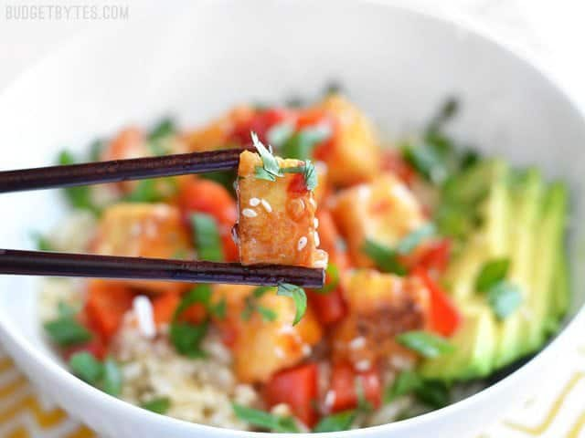

Sweet Chili Tofu Bowls

Description
Sweet Chili Tofu Bowls are an easy, fresh, and flavorful vegan weeknight dinner, packed with vibrant colors and flavors. Perfect for meal prep!
Ingredients
- 14 oz. extra firm tofu
- 1 pinch salt
- 2 Tbsp cornstarch
- 2 Tbsp cooking oil
- 1 avocado
- 1 bell pepper
- 2-3 green onions
- 1 handful fresh cilantro
- 1/2 cup sweet chili sauce
- 2 tsp sesame seeds (optional)
- 4 cups cooked rice